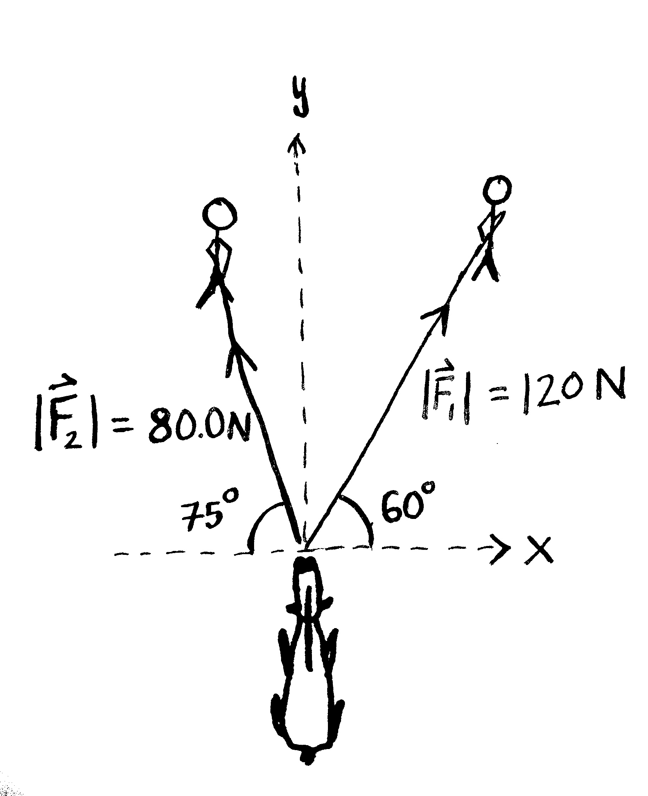
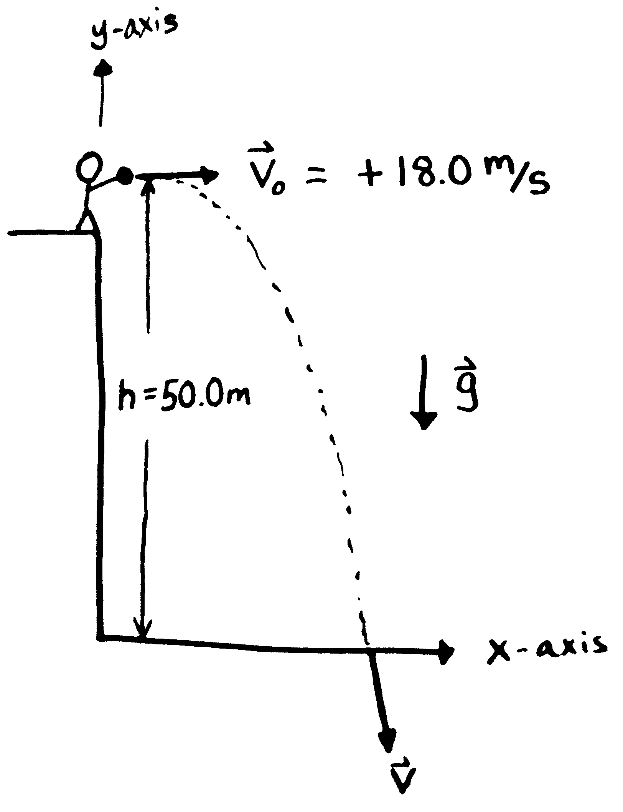
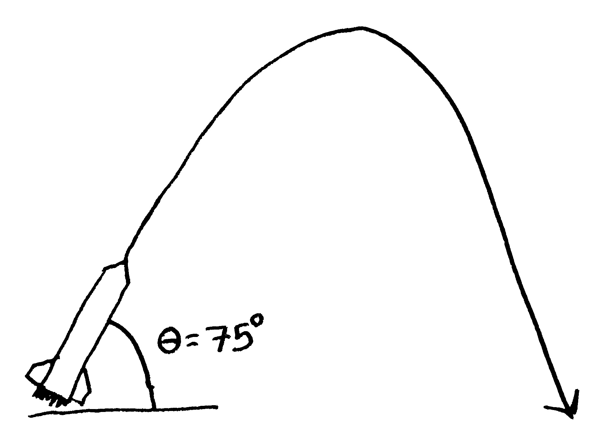

Homework 01
Problem 1
A person takes a trip, driving with a constant speed of \(89.5~km/h\), except for a \(22.0~minute\) rest stop. If the persons average speed is \(77.8~km/h\),
- How much time is spent on the trip? [2.80 hr]
- How far does the person travel? [218 km]
Problem 2
A car on the highway slows from \(32.0~m/s\) to rest as the driver approaches a traffic jam. The car has \(70.0~m\) to stop.
- Solve for the acceleration needed to stop the car. [-7.31 m/s2]
- Solve for the time needed to stop. [4.37 s]
Problem 3
A ball is thrown directly downward with an initial speed of \(8.00~m/s\), from a height of \(30.0~m\). After what time interval does it strike the ground? [1.79 s]
Problem 4
A model rocket is launched straight upward with an initial speed of \(50.0~m/s\). It accelerates with a constant upward acceleration of \(2.00~m/s^2\) until its engines stop at an altitude of \(150~m\).
- What can you say about the motion of the rocket after its engines stop? [t=2.83s and v=55.67m/s]
- What is the maximum height reached by the rocket? [308 m]
- How long after liftoff does the rocket reach its maximum height? [8.51 s]
- How long is the rocket in the air? [16.4 s]
Problem 5
A hiker starts at his camp and move the following distances while exploring his surroundings: \(75.0~m\) north, \(2.50 \times 10^2~m\) east, \(125~m\) at an angle of \(30.0^\circ\) north of east, and \(1.50 \times 10^2~m\) south.
- Find his resultant displacement from camp. Take east as the positive x-direction and north as the positive y-direction. [\(\vec{R}\) = 358.25 m,-12.5 m)]
- Would changes in the order in which the hiker makes the given displacements alter his final position?
Problem 6
The helicopter view of the figure below shows two people pulling on a stubborn mule. Find:
- the single force that is equivalent to the two forces shown. (\(|\vec{F_1}|=80.0~N\) and \(|\vec{F_2}|=120~N\)) [\(\vec{R}\) = (39.3 N,181 N)]
- the force a third person would have to exert on the mule to make the net force equal to zero. The forces are measured in units of Newtons (\(N\)).\newline\

Problem 7
A student stands at the edge of a cliff and throws a stone horizontally over the edge with a speed of \(18.0~m/s\). The cliff is \(50.0~m\) above a flat, horizontal beach as shown in the below figure.
- If the origin is at the base of the cliff, what are the coordinates of the initial position of the stone? [\((x,y) = (0m,50.0~m)\)]
- What are the components of the initial velocity? [\(v_{0x} = 18.0~m/s, v_{0y}=0~m/s\)]
- Write the equations for the x- and y-components for the velocity of the stone with time. [\(v_{x}=18.0~m/s, v_{y}= -(9.80~m/s^2)t\)]
- Write the equations for the position of the stone with time, using the coordinates in the figure. [\(x=(18.0~m/s)t, y= -(4.90~m/s^2)t^2 + 50.0~m\)]
- How long after being released does the stone strike the beach below the cliff? [\(3.19~s\)]
- With what speed and angle of impact does the stone land? [\(36.1~m/s, -60.1^\circ\)]\newline\

Problem 8
The world record long jump is \(8.96~m\) and was made by Mike Powel in 1991. During his jump Mike reaches a height of \(0.785~m\).
- Solve for his initial velocity in the y-direction. [3.92 m/s]
- Solve for his initial velocity in the x-direction. [11.2 m/s]
- What is Mike Powel’s initial vector velocity referenced from the origin? [11.9 m/s @ \(19.3^\circ\)]
Problem 9
A toy car is set loose too close to a table edge rolls off and falls to the floor. The toy car, initially at rest \(0.330~m\) from the table’s edge, undergoes an acceleration of \(0.901~m/s^2\).
- Find the velocity of the toy car at the table’s edge. [\(0.771~m/s\)]
- Solve for the distance the toy car will travel (range) if the table is \(1.24~m\) tall. [\(0.387~m\)]
Problem 10
A model rocket is launched at an angle of \(75.0^\circ\) from rest with an acceleration of \(10.0~m/s^2\). The rocket booster propels the rocket for \(6.00~s\) before cutting out. The rocket then free-falls back to the ground.
- Solve for the maximum height reached by the rocket. [\(345~m\)]
- Solve for the range of the rocket. [\(268~m\)]\newline\

Note: This problem is tricky because the rocket accelerates in the \(x\) direction. First solve for the motion up until the time where the rocket shuts off. Then proceed to solve the rest of the problem.
Remember for problem 3 and 4: If you have an acceleration in the x direction you need to use the full kinematic equations.
\(x_f = x_i + v_{xi} t + \frac12 a_x t^2\)
\(v_{xf} = v_{xi} + a_x t\)
\(v_{xf}^2 = v_{xi}^2 + 2a_x(x_f - x_i)\)